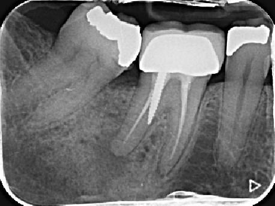
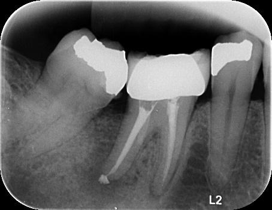

איטום נקב
ניקוב הוא חור בדופן השן שיכול להיווצר בטעות ע"י רופא השיניים. קיימת חשיבות לטפל במקרים אלו בהקדם, היות שדרכם עלולים לחדור חיידקים וליצור דלקת. במקרים אלו יש להעריך האם ניתן לטפל ומה סיכויי ההצלחה, ובהתאם לכך לאטום את אותם נקבים עם חומר יעודי וכך להציל את השן.
הצגת מקרים
מקרה 1

יתד דנטטוס שחודר לתוך הרקמה התומכת

לאחר ביצוע האיטום עם MTA

ביקורת לאחר שנתיים וחצי
מקרה 2

יתד דנטטוס שחודר ויוצר נקב (ע"פ ה-CT)

איטום הנקב עם MTA וביצוע חידוש טיפול שורש
מקרה 3

מקרה 4

מקרה 5

מקרה 6

מקרה 7